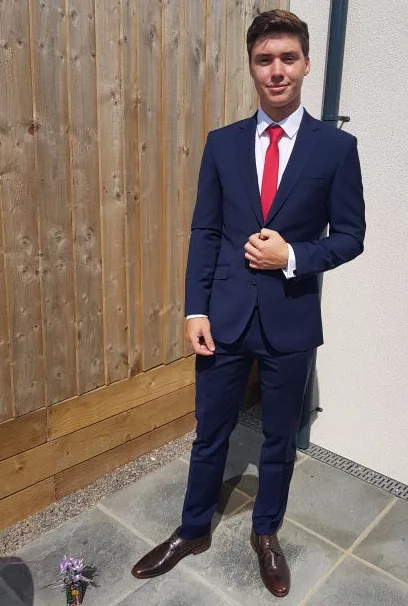

About
Connor King
Senior Software Engineer | Simulation & Real-Time Systems

I'm a senior software engineer specialising in simulation and real-time systems. I lead Unity development in Babcock International Group's Data Visualisation & Simulation team, where I direct technical architecture, engineering standards and delivery of simulation platforms across UK submarine and naval programmes, and mentor junior and mid-level engineers. I hold active UK SC clearance.
I joined Babcock as a Unity Developer in July 2020 and was promoted to lead in January 2022. My work there spans interactive digital twins, multi-agent simulation, real-time telemetry and custom rendering, built in C# and HLSL on Unity.
In 2021 I founded Soul Splicers, where I'm the solo systems engineer on a commercial 2D action-platformer built from scratch in Unity/C#, covering everything from combat state machines and custom editor tools to backend services, player telemetry and CI/CD.
My grounding is in low-level real-time engineering: C++, DirectX graphics pipelines, real-time physics and simulation algorithms. I studied these at UWE Bristol (BSc (Hons) Games Technology, 2:1; MSc Commercial Games Design, Distinction) and explored them in projects like my DirectX 11 open world and collision system.
- Current role
- Lead Unity Developer, Babcock International Group
- Clearance
- Active UK Security Clearance (SC)
- Location
- Bristol / South West UK, open to relocation
- Languages
- English (Native), Welsh (Intermediate)
- Interests
- Embedded Electronics (Arduino), Competitive Game Jams
Education
MSc in Commercial Games Design (Distinction)
University of the West of England (UWE Bristol) · 2019 – 2020
Focus: Commercial Software Quality, Advanced Architecture, Engine Optimization
BSc (Hons) in Games Technology (2:1)
University of the West of England (UWE Bristol) · 2016 – 2019
Focus: C++, DirectX Graphics Pipelines, Real-Time Physics, Simulation Algorithms